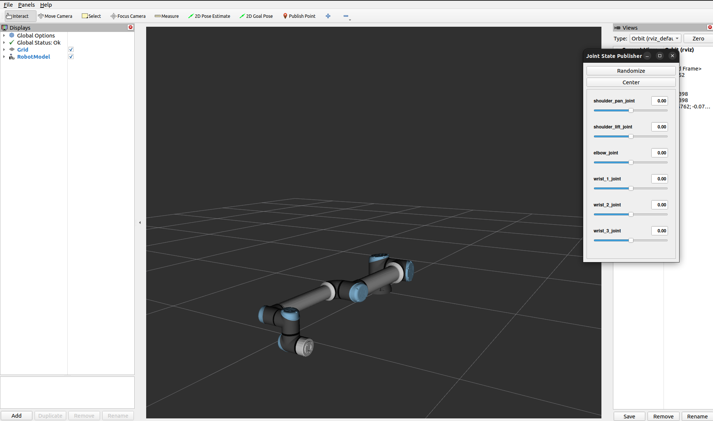
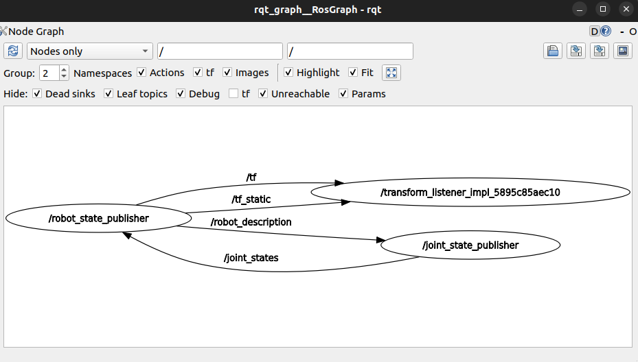
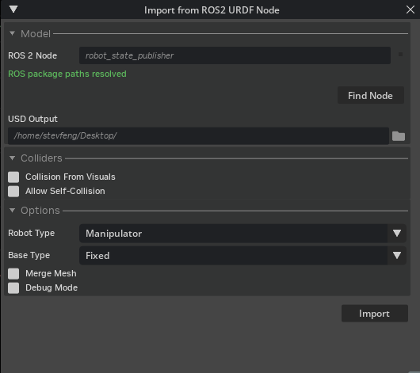
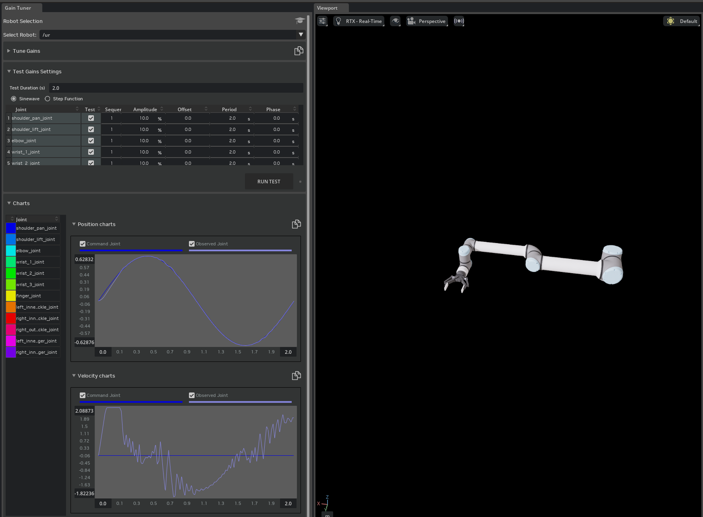
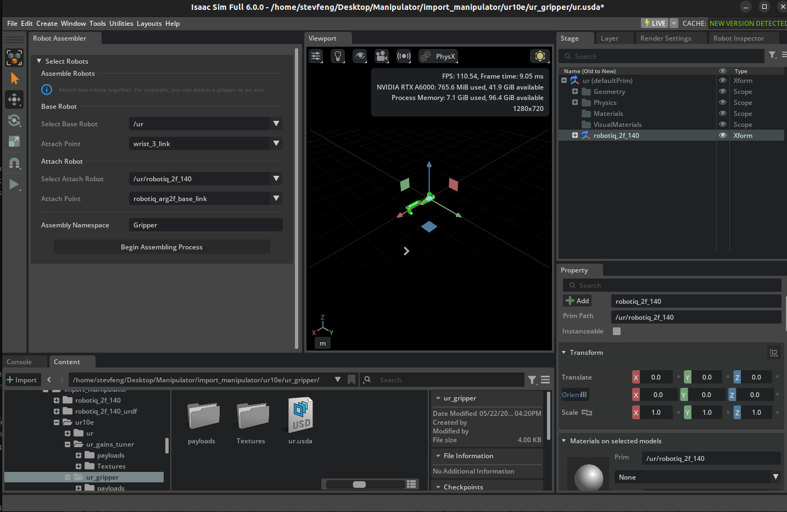
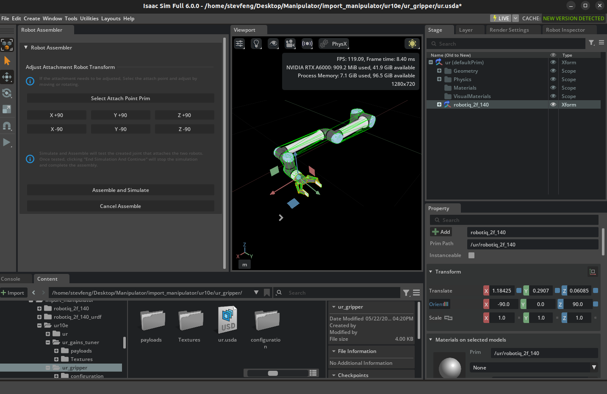
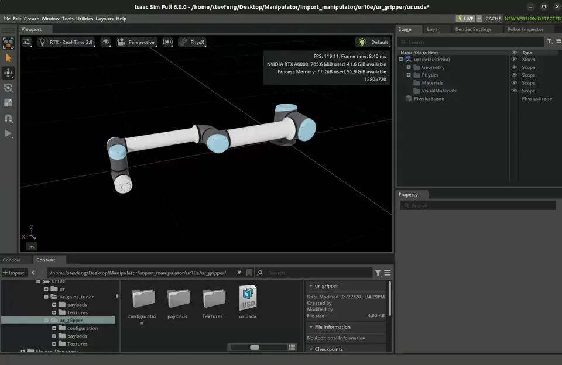

Tutorial 6: Setup a Manipulator#
Learning Objectives#
This is the first manipulator tutorial in a series of four tutorials. This tutorial shows how to import the UR10e robot from Universal Robots and the 2F-140 gripper from Robotiq into NVIDIA Isaac Sim from URDF files and connect them together under one articulation.
30 Minutes Tutorial
Isaac Sim always uses Python 3.12, so the UR description package and any ROS packages used in this tutorial must be available in a Python 3.12 environment. How you obtain the package depends on your platform:
Ubuntu 24.04 + ROS 2 Jazzy — install the prebuilt
ros-jazzy-ur-descriptionapt package; the system Python (3.12) already matches Isaac Sim.Ubuntu 22.04 + ROS 2 Humble or Jazzy — the system Python is 3.10, so the workspace must be cloned and rebuilt against Python 3.12 using the included
build_ros.shscript.Windows + Pixi-based ROS 2 Jazzy — add the UR description package to your Pixi environment (
pixi add ros-jazzy-ur-description); Pixi-managed ROS 2 Jazzy already runs on Python 3.12. See ROS 2 Installation (Other Platforms) for Pixi setup. WSL2 is not supported for the ROS-based URDF import workflow — use the prebuilt USD files in the content browser instead.
Attention
ROS 2 Humble on Windows (Pixi) is not a supported configuration for this tutorial. On Windows, only ROS 2 Jazzy with Pixi is supported. Switch to ROS 2 Jazzy on Windows, or move to a Linux configuration, to follow this tutorial as written.
Verify or choose your configuration in the Build Environment banner at the top of this page to see the steps for your setup. Your selection drives the platform-specific commands throughout the rest of this page.
Build Environment
Prerequisites#
If you are new to NVIDIA Isaac Sim, complete the Wheeled Robot Set Up Tutorials tutorial prior to beginning this tutorial.
Review the ROS 2 installations ROS 2 Installation (Default) prior to beginning this tutorial.
Review the URDF importer URDF Importer Extension tutorial.
In a ROS sourced terminal, install xacro for your selected configuration (see the Build Environment banner at the top of the page):
sudo apt install ros-$ROS_DISTRO-xacro
pixi add ros-$ROS_DISTRO-xacro
Attention
ROS 2 Humble on Windows (Pixi) is not a supported configuration. Switch to ROS 2 Jazzy on Windows, or move to a Linux configuration, to follow this tutorial as written.
Locate the
import_manipulatorfolder in the content browser atIsaac Sim/Samples/Rigging/Manipulator/import_manipulator/.
Build and Install the UR Description Package#
Follow the steps for the configuration you selected in the Build Environment selector at the top of this page.
Install the prebuilt UR description package and source ROS 2 Jazzy:
sudo apt install ros-jazzy-ur-description
source /opt/ros/jazzy/setup.bash
Then launch Isaac Sim from the same terminal:
./isaac-sim.sh
On Ubuntu 22.04, the system Python (3.10) does not match the Python 3.12 used by Isaac Sim, and the UR description package is not natively available for Python 3.12. Clone the package and rebuild it with the included build_ros.sh script.
Note
See Isaac Sim ROS Workspaces for more information on setting up your custom ROS 2 package in your ROS workspace.
Change into your Isaac Sim ROS Workspace, then into the distro-specific workspace’s
srcfolder:cd <path to Isaac Sim ROS Workspace> cd jazzy_ws/src
cd <path to Isaac Sim ROS Workspace> cd humble_ws/src
Clone the branch of the Universal Robots ROS 2 Description repository that matches your ROS distribution:
git clone --branch jazzy https://github.com/UniversalRobots/Universal_Robots_ROS2_Description.git
git clone --branch humble https://github.com/UniversalRobots/Universal_Robots_ROS2_Description.git
Return to the Isaac Sim ROS Workspace root and build against Python 3.12:
cd ../.. ./build_ros.sh
Source the Python 3.12 ROS environment and launch Isaac Sim.
source build_ws/jazzy/jazzy_ws/install/local_setup.bash source build_ws/jazzy/isaac_sim_ros_ws/install/local_setup.bash ./isaac-sim.sh
source build_ws/humble/humble_ws/install/local_setup.bash source build_ws/humble/isaac_sim_ros_ws/install/local_setup.bash ./isaac-sim.sh
Attention
ROS 2 Humble on Ubuntu 24.04 is not an officially supported configuration in ROS 2 Installation (Default). Switch to ROS 2 Jazzy on Ubuntu 24.04, or move to ROS 2 Humble on Ubuntu 22.04, to follow this tutorial as written.
On Windows, the URDF import workflow in this tutorial is supported only with a Pixi-based ROS 2 Jazzy installation. Follow ROS 2 Installation (Other Platforms) for Windows ROS 2 setup and to install or build the UR description package against the Pixi environment. If you are using WSL2, skip the ROS-based import steps and use the prebuilt USD files in the content browser at Isaac Sim/Samples/Rigging/Manipulator/import_manipulator/.
Attention
ROS 2 Humble on Windows (Pixi) is not a supported configuration in ROS 2 Installation (Default). Switch to ROS 2 Jazzy on Windows, or move to a Linux configuration, to follow this tutorial as written. If you need to use the UR10e on Windows without ROS, use the prebuilt USD files in the content browser at Isaac Sim/Samples/Rigging/Manipulator/import_manipulator/.
Import the UR10e Robot#
Enable the ROS 2 Robot Description URDF Importer Extension#
Go to
Window>Extensions.Type
URDFin the search box, and find theROS 2 Robot Description URDF Importer Extension.If you can’t find it, remove the
@featurefilter from the search box.If you still can’t find it, make sure Isaac Sim was launched from the same terminal where ROS was sourced.
Enable the extension by clicking the toggle button labeled
ENABLE.Check the box for
AUTOLOAD, just to the right ofENABLE.
Launch the URDF Publisher Topic#
Open a new terminal with a native ROS 2 environment, source ROS 2 for your configuration, and launch the UR10e description.
Important
Do not reuse the Python 3.12
build_wsshell used to launch Isaac Sim above. Thebuild_wspaths exist only to source the matching ROS 2 bridge into Isaac Sim; forros2 launchcommands, use your OS-native ROS 2 install (or a Docker container for distros that are not natively available on your OS).source /opt/ros/jazzy/setup.bash ros2 launch ur_description view_ur.launch.py ur_type:=ur10e
Source your native ROS 2 Humble install. If
ur_descriptionis not already available, install it from apt:sudo apt install ros-humble-ur-description source /opt/ros/humble/setup.bash ros2 launch ur_description view_ur.launch.py ur_type:=ur10e
Alternatively, build
ur_descriptionnatively (Python 3.10) intohumble_wswithcolcon build, then sourcehumble_ws/install/local_setup.bashinstead of using the apt package.ROS 2 Jazzy is not natively available on Ubuntu 22.04, so run the launch command from a ROS 2 Jazzy Docker container with
jazzy_wsmounted and built natively. Follow Running ROS in Docker Containers to start anosrf/ros:jazzy-desktopcontainer, buildjazzy_wsinside it, then from inside the container run:source /jazzy_ws/install/local_setup.bash ros2 launch ur_description view_ur.launch.py ur_type:=ur10e
Activate the Pixi environment, then run:
ros2 launch ur_description view_ur.launch.py ur_type:=ur10e
Attention
ROS 2 Humble on Windows (Pixi) is not a supported configuration. Switch to ROS 2 Jazzy on Windows, or move to a Linux configuration, to follow this tutorial as written.
Verify that you see a window similar to the image below:

Set up one more terminal for
rqt_graph, to see ROS nodes and topics being published:rqt_graph
Verify that you see a window similar to the image below:

{kind=link}
{kind=link}
Hint
If the nodes are not showing up in rqt_graph, press the refresh button next to the drop down menu.
Import the UR10e Robot into Isaac Sim#
Go to Isaac Sim.
Navigate to File > Import from the ROS 2 URDF Node.
In the ROS2 Node field, type
robot_state_publisher, click Find Node.In the USD Output field, select the desired output (for example,
~/Desktop/).In the Robot Type field, select
Manipulator.In the Base Type field, select
Fixed.

Click Import, the importer should automatically open the ur robot.
{kind=link}
For reference, the resulting USD file is available in the content browser at Isaac Sim/Samples/Rigging/Manipulator/import_manipulator/ur10e/ur/ur.usda.
Set Gains Using the Gain Tuner#
The importer does not set the gains for the UR robot automatically. You can use the Gain Tuner to set the gains for the UR robot. In this tutorial, we will use the gain tuner to set the natural frequency and damping ratio for the UR robot, which are defined as:
Where \(\omega_n\) is the natural frequency and \(\zeta\) is the damping ratio, and \(m\) is the computed joint inertia based on the mass of the robot at both sides of the joint. The damping ratio is such that \(\zeta = 1.0\) is a critically damped system, \(\zeta < 1.0\) is underdamped, and \(\zeta > 1.0\) is overdamped.
Use the Gain Tuner Extension to set and verify the gains for the UR robot.
Go to Tools > Robotics > Asset Editors > Gain Tuner.
On the Gain Tuner window, on the Robot Selection dropdown, select the ur articulation in the stage.
In the Tune Gains panel, you can adjust the gains for the robot and the gripper fingers joints. Test it with the Test Gains Settings panel. let’s start by setting the natural frequency to
300and the damping ratio to1.0.
Hint
We recommend determining the gains for a small group of joints first, if it is difficult to tune the gains for the whole robot. Below are some tips for tuning the gains:
Higher the natural frequency, the faster the robot will respond to the target position. Lower the damping ratio, the faster the robot will reach the target position.
If the resulting plot shows the robot is undershooting the target position, you can increase the
Nat. Freq.slightly.If the resulting plot shows the robot is overshooting the target position, you can decrease the
Nat. Freq.slightly and increase theDamping Ratio.Disabling gravity can help you see the gains more clearly.
Only gain test the joints that are expected to be moving together, the gain test order can be selected by the Sequence dropdown.
Reduce the maximum speed of a joint that you are tuning, if it is not expected to be commanded to move that fast in practice. The default values in the Gains Test are the maximum velocity written into the USD.
{kind=link}

Note
See Gain Tuner Extension for more information on the Gain Tuner and Tutorial 11: Tuning Joint Drive Gains for more information on how to tune the gains for the robot.
For reference, the resulting USD file is available in the content browser at Isaac Sim/Samples/Rigging/Manipulator/import_manipulator/ur10e/ur_gains_tuner/ur.usda.
2F-140 Gripper Parameters#
In the next section of the tutorial, we will be connecting the UR10e robot with the 2F-140 gripper. Let’s review the expected parameters for the gripper joints.
Expected Parameters for Finger and Knuckle Joints#
Joint Name |
Lower Limit |
Upper Limit |
Gearing |
Stiffness |
Damping |
Max Force |
|---|---|---|---|---|---|---|
Finger Joint |
0 |
40.107 |
N/A |
37.51957 |
0.00125 |
1000 |
Left inner Finger |
-8.021 |
48.128 |
-1 |
N/A |
N/A |
N/A |
Left Inner Knuckle |
-48.128 |
8.021 |
1 |
N/A |
N/A |
N/A |
Right inner Knuckle |
-48.128 |
8.021 |
1 |
N/A |
N/A |
N/A |
Right outer knuckle |
-48.128 |
8.021 |
1 |
N/A |
N/A |
N/A |
Right inner Finger |
-8.021 |
48.128 |
-1 |
N/A |
N/A |
N/A |
Expected Parameters for Mimic Joints#
Reference Joint:
/robotiq_arg2f_140_model/joints/finger_jointReference Joint Axis:
rotXNatural Frequency:
2500Damping Ratio:
0.005
Connect the UR10e Robot with the Robotiq 2F-140 Gripper#
Much like a real robot can have its tools changed for different tasks, simulated robots benefit from the same capability. This section outlines two methods to connect the UR10e robot with the Robotiq 2F-140 gripper
We will use the Robot Assembler to connect the UR10e robot with the 2F-140 gripper.
Open the UR10e USD file created from the last activity (
ur.usda).Drag and drop the
robotiq_2f_140.usdfile we created earlier into the stage.Open the robot assembler by going to Tools > Robotics > Asset Editor > Robot Assembler.
In Base Robot, set Select Base Robot to
/ur, Attach Point towrist_3_link.In Attach Robot, set Select Attach Robot to
/ur/robotiq_2f_140, Attach Point torobotiq_arg2f_base_link.Set Assembly Namespace to
Gripper.
Click Begin Assembling Process to start the process.

Adjust the attachment point orientation to make sure the end effector is attached to the gripper correctly. Rotate the gripper 90 degrees around the z-axis by clicking Z +90.

Click Assemble and Simulate to test the process.
Click End Simulation And Finish to complete the process.
Save the asset by going to File > Save or press Ctrl+S.
{kind=link}
{kind=link}
Run the Simulation#
In the Stage panel, select the ur prim.
In the Property Editor at the bottom right, find the Variants section.
Beside Gripper, select None and the gripper will be removed from the robot.
Beside Gripper, select robotiq_2f_140 and the gripper will be added to the robot.
Save the asset by going to File > Save or press Ctrl+S.
{kind=link}

Note
The completed robotics arm asset with the gripper is available in the content browser at Isaac Sim/Samples/Rigging/Manipulator/import_manipulator/ur10e/ur_gripper/ur.usda.
Summary#
In this tutorial, you took the UR10e robot from Universal Robots and the 2F-140 gripper from Robotiq and imported them into NVIDIA Isaac Sim from URDF files and connected them together under one articulation using the GUI and Robot Assembler.